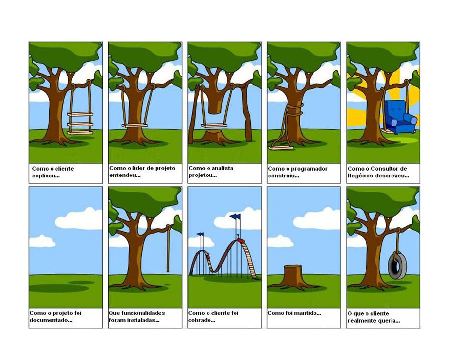
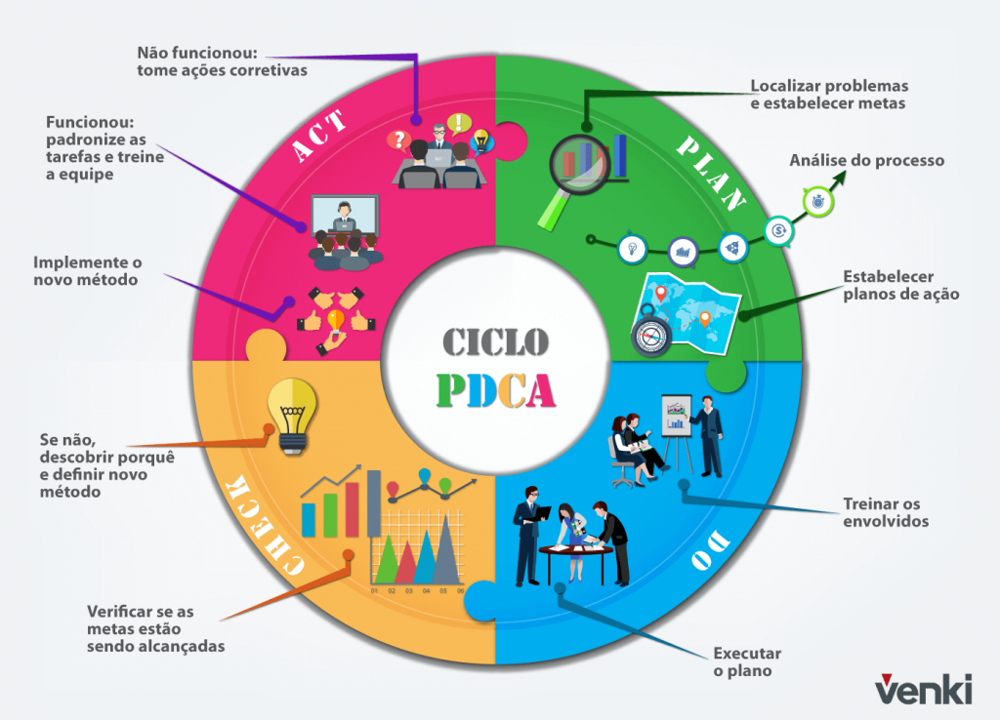

Os conceitos e a importância dos testes de software para sua aplicação
1- INTRODUÇÃO
Engenharia de Software é uma área muito nova que surgiu, em meados dos anos 2000, com o objetivo de trabalhar com todos os aspectos que envolvem a produção de um software e solucionar a chamada crise do software. Essa crise ocorreu devido à baixa qualidade, prazos e orçamentos previstos não cumpridos e falhas do produto. De acordo com Friedrich Ludwig Bauer, a Engenharia de Software é a criação e a utilização de sólidos princípios de engenharia a fim de obter software de maneira econômica, que seja confiável e que trabalhe em máquinas reais. Em outras palavras, a Engenharia de Software é uma área que utiliza princípios da engenharia e um conjunto de etapas para desenvolver e aplicar métodos com a finalidade de produzir um produto de alta qualidade e baixo custo. [1]
Para obter o que chamamos de Garantia de Qualidade de Software temos uma atividade chamada de VV&T – Verificação, Validação e Teste que tem como objetivo diminuir erros, falhas de codificação que possam interferir no produto. Vale ressaltar que as atividades de VV&T não conduzem ao produto final, são etapas que devem ocorrer durante todo o processo de produção do software. Elas se dividem em dois tipos: atividade estática e a dinâmica. O objetivo desta apostila é tratar de uma atividade dinâmica: a etapa de teste de software. Segundo (Myers, 1979) a etapa de teste é um processo ou um grupo de processos, definidos para garantir que um código faça o que ele foi desenhado para fazer, e não faça nada que não foi especificado para fazer.
2- CONCEITO TEÓRICO
2.1- O que é um teste de software?
“Teste de software é todo e qualquer procedimento que ajuda a determinar se o programa atinge as expectativas para as quais foi criado” (DIAS NETO, 2010). Outro conceito é “Teste é o processo de operar um sistema ou componente do sistema sob condições específicas, observando e registrando o resultado e fazendo uma avaliação de alguns aspectos do sistema ou componente” (IEEE Standard Glossary).
2.2 - Por que devo testar e quando devo parar os testes?
Por que precisamos achar falhas, defeitos e erros dos desenvolvedores durante o processo de produção para conseguir, no final, entregar um produto de qualidade e barato. Quanto mais cedo um defeito é encontrado, mais barato ele custará. É de suma importância verificar se o software está atendendo as expectativas e se está funcionando como deveria. O software só chegou no seu produto final quando foram testados todas as funcionalidades e os seus casos de uso. Os testes só podem ser finalizados quando atingir uma confiança nos requisitos, quando os critérios de encerramento forem atingidos ou quando o custo para identificação dos defeitos não compensam mais. [2]
2.3 - Defeito versus Falha versus Erro
Segundo o International Software Testing Qualifications Board (ISTQB), órgão responsável por emitir o selo de qualidade para testadores de software, o conceito de erro, falha e defeito é:
| Erro | Falha humana que produz resultado inesperado. |
| Falha | Ocorre através da execução de um código defeituoso. |
| Defeito | É um código mal escrito que produz erro e causa irregularidades no sistema. |
Podemos observar um efeito cascata: toda falha precisa de um defeito para ocorrer, todo defeito precisa de um erro para acontecer e toda falha sempre se origina um erro (ISTQB, 2016). Pode-se concluir que o teste de software apenas irá trabalhar com as falhas do sistema. Segundo Dias Neto (2010), todas as falhas são originadas a partir do erro humano. O processo de produção de um sistema é efetuado a partir do ciclo de desenvolvimento do software. Durante o início do ciclo até o fim dele, é possível obter diversas interpretações e erros, até por que esse ciclo envolve conversar com clientes. Isso pode ser fácil entendido a partir da seguinte imagem. [3]
Fonte: Google (2018)
Apesar da imagem ser humorística, são situações que podem acontecer de verdade. Por isso, a etapa de teste é bastante ampla. Segundo Inthurn (2001), em média, os testes bem-sucedidos corrigem apenas 60% das falhas do software. O custo para realizá-los é relativamente barato se for comparado com a manutenção corretiva após o término do produto. Para obter um produto de qualidade, é necessário obter uma rotina exaustiva de teste que tem de ocorrer durante todo o desenvolvimento do projeto.
2.4 - Importância dos testes de software para garantia da qualidade
Para iniciar esse assunto, é importante começar com uma pergunta: o que seria a qualidade de software? Segundo Pressman (1994), a qualidade de software é a conformidade a requisitos funcionais e de desempenho que foram explicitamente declarados, a padrões de desenvolvimento claramente documentados, e a características implícitas que são esperadas de todo o software desenvolvido por profissionais. A International Organization Standardization (ISO) e a International Electrotechnical Comission (IEC) também conceituou da seguinte maneira, a qualidade de software é a totalidade de um produto que lhe confere capacidade de satisfazer necessidades explícitas e implícitas.
As necessidades explícitas são aquelas que estão definidas nos requisitos documentados e estão ligadas à qualidade do processo de desenvolvimento do software. E, as necessidades implícitas são aquelas que não estão documentadas, mas são implicitamente necessárias ao usuário e estão relacionadas a qualidade em uso do produto.
Poŕem, o que é preciso para garantir a qualidade? Segundo (Vasconcelos et al., 2006), a qualidade de software é garantida por meio de atividades que estão focadas na prevenção de defeitos e problemas que podem surgir nos produtos de trabalho. Para conseguir obter a qualidade, é preciso considerar três dimensões: confiança, funcionalidade e performance. A confiança procura saber se o sistema é resistente a falhas, a funcionalidade se os requisitos foram atendidos corretamente e a performance se o tempo de resposta do sistema está adequado e aceitável. Para conseguir atender essas dimensões, utiliza-se o ciclo PDCA: Planejar, Executar, Verificar e Agir.
Fonte: Google (2018)
Para entender o ciclo é importante explicar cada etapa:
- Planejamento (Plan) para que essa etapa tenha sucesso, é necessário que o projeto do software seja bem elaborado, de maneira que, evite falhas e problemas futuros.
- Execução (Do) essa é a parte de executar o que foi determinado na etapa de planejamento. Para evitar problemas, essa fase precisa seguir corretamente tudo o que foi estipulado, sem pular etapas ou realizar grandes mudanças.
- Checagem (Check) nessa etapa é onde se procura as falhas e verificar se tudo está de acordo.
- Ação (Act) é a última fase do ciclo. Aqui são aplicadas ações corretivas para aperfeiçoar o projeto. É o fim e o começo também, porque o ciclo todo é refeito com novos parâmetros.
O processo de teste de software atua na etapa de checagem, mas também no desenvolvimento porque os testes são possíveis de realizar em todas as etapas. Segundo Bartié (2002), a qualidade de software pode ser dividida em teste de verificação e teste de validação. Os testes de verificação focam em garantir o processo de engenharia de software e os de validação estão focados na garantia da qualidade do software. O objetivo desse teste é avaliar a conformidade do software com os requisitos e especificações. [4]
3- CONCLUSÃO
Os testes de software são uma das etapas mais importantes para o sucesso de uma aplicação. Para que o desenvolvimento do software seja um produto ou serviço de qualidade e com custos baixos, é necessário aplicar os testes de software para garantir esses dois aspectos. Durante todo o ciclo de vida de um desenvolvimento de software, é possível ter erros e interpretações diferentes, até porque foi visto são originadas da falha humana. Por isso, é necessário obter uma rotina exaustiva de teste que tem de ocorrer durante todo o desenvolvimento do projeto. Então, para garantir a qualidade dos testes e, assim, consequentemente, um bom produto final, é preciso executar atividades que foquem na prevenção de defeitos.
REFERÊNCIAS BIBLIOGRÁFICAS
[1] BARBOSA, E. et al. Introdução ao Teste de Software.
[2] DEVMEDIA. Testes de software - Introdução. Disponível em:
[3] BRAGA, Pedro Henrique. Teste de Software. São Paulo: Pearson Education do Brasil, 2016.
[4] BARTIÉ, Alexandre. Garantia da Qualidade de Software: As melhores práticas de engenharia de Software aplicadas a sua empresa. São Paulo: Campus, 2002.
DE AMORIM, Deivison. et al. Gerenciamento de Teste de Software: Um comparativo entre Ferramentas Open Source. CESAR EDU, 2016.
RIOS, Emerson; MOREIRA, Trayahú. Teste de Software. Rio de Janeiro. Alta Books, 2013, 3 ed.
PÁDUA, Wilson. Engenharia de SoftwareRio de Janeiro. LTC Editora, 2 ed.
PRESSMAN, Roger; MAXIM, Bruce. Engenharia de Software. São Paulo, AMGH Editora Ltda, 2016, 8 ed.